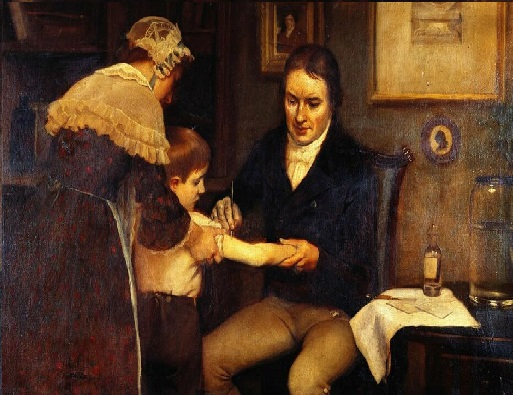
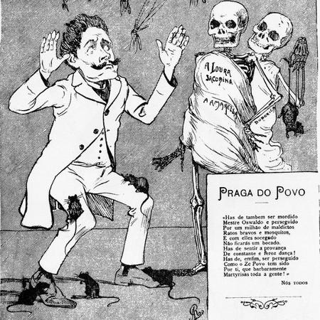

Se pararmos pra pensar, a dificuldade que passamos desde o início da pandemia se deu devido ao surgimento de uma doença da qual não havia uma vacina pronta. Ao analisar os dados atuais, percebemos que a vacina foi essencial para a redução do número de casos de Covid-19. Isso não ocorreu somente com o coronavírus, a criação da vacina foi essencial para melhorar a qualidade de vida da população ao longo dos anos, permitindo-as ficarem imunizadas contra inúmeras doenças. De acordo com a OMS, Organização Mundial da Saúde, as vacinas são responsáveis por evitar de dois à três milhões de mortes por doenças preveníveis.
O princípio que deu ideia à vacina surgiu na China, em meados do século 10. Na época, a varíola, doença que causava febre e pústulas (pequenos tumores inflamatórios na pele, de aspécto purulento), deixava cicatrizes nos doentes e não havia cura. Alguns cientistas da época, transformavam as cascas das feridas de varíola em pó, que naturalmente contia o vírus inativo. De maneira que, ao esfregá-lo nas feridas de pessoas já contaminadas, o organismo dos acometidos era capaz de criar anticorpos sem sofrer os danos provocados pelo vírus. Este método diferente, foi nomeado de variolação.
Edward Jenner foi o grande idealizador da vacina, criando a primeira no século 18, época em que a varíola era a doença que representava a maior ameaça à humanidade. Em suas pesquisas, Edward notou que os moradores de áreas rurais que haviam contraído Cowpox, a varíola bovina, não ficavam doentes com a varíola humana. Dessa forma, Edward utilizou um garoto de 8 anos de idade para realizar seus experimentos, o qual teve uma pequena dose de varíola bovina aplicada em sí. Após a recuperação do menino, que demonstrou sintomas brandos da doença, Edward aplicou no garotinho o vírus da varíola humana em sua forma mais letal, e em conformidade com as pesquisas de Jenner, o menino estava imune à doença e não desenvolveu a varíola humana. O nome "vacina" vem, justamente, de "vacca" devido ao contexto histórico. A varíola foi a primeira doença a receber uma vacina como a entendemos hoje, estima-se que essa efermidade ocasionou a morte de quase 300 milhões de pessoas no século 20, sendo extinta em 1984.

Imagem de Edward Jenner aplicando vacina.
A Vacina no Brasil

Sátira à Oswaldo Cruz feita pelo povo.
Assim como na história da imunização geral, no Brasil, a história da vacina também está atrelada à vacina contra a varíola. Esta, era obrigatória para as crianças desde 1837, e adultos desde 1846, porém, esta lei só passou a ser cumprida no ano de 1904 à pedido de Oswaldo Cruz, médico sanitarista e pioneiro de infectologia. A população, até então, se viu contrária à tomar a vacina obrigatoriamente, e deram origem à Revolta da Vacina no Rio de Janeiro. A situação logo agravou consideravelmente, ocasionando em 30 mortos, 110 feridos, 945 pessoas presas e 461 deportadas. Em 1908, o Rio de Janeiro (até então capital do país) foi atingido por um violento surto de varíola, logo, o medo da doença tornou-se mais alarmante que o medo da própria vacina, dessa forma, as pessoas começaram a aceitar a vacina e se imunizaram.
Hoje, o PNI (Programa Nacional de Imunizações) que foi criado em 1973 e instituído por lei, realiza a vacinação da população brasileira distribuindo doses de vacina através do SUS (Sistema Único de Saúde), graças à isso, o perfil epidemiológico das doenças imunopreveníveis mudou consideravelmente. Atualmente, temos como resultado, a extinção da poliomielite (pólio) e varíola, além do controle do sarampo, hepatite, rubéola, tétano, difteria, e outras doenças. As políticas públicas de imunização do Brasil são referênca internacional no controle e erradicação de doenças infecciosas.